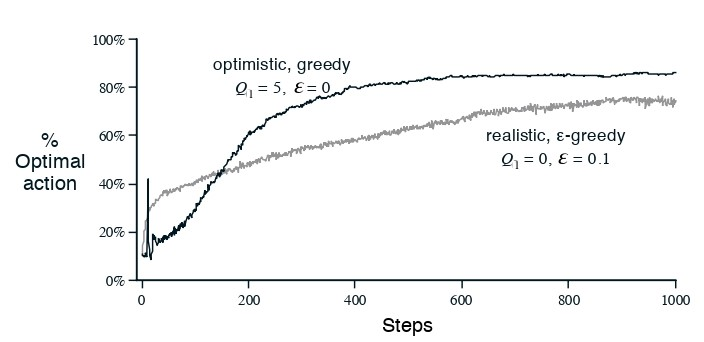
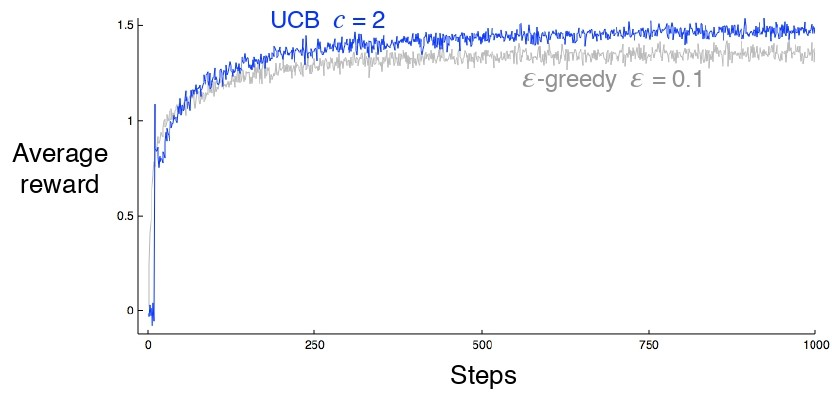
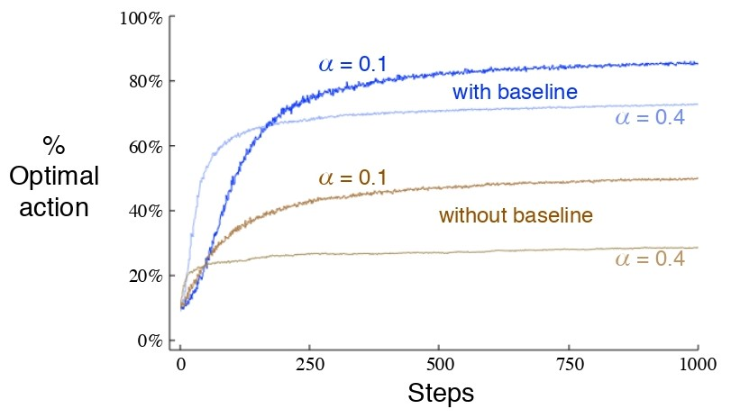
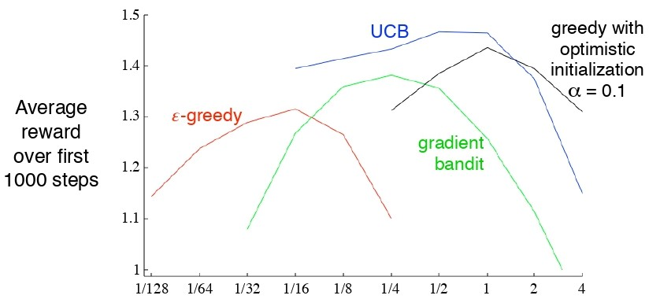

```{python}
print("Hello Python!")
```Hello Python!\(k\)個の選択肢があり、どれか1つを選ぶと選択に依存した定常確率分布から報酬が発生する。これを繰り返し、ある決められた時間ステップにおいて期待合計報酬を最大化する問題を\(k\)本腕バンディット問題という。以後、時間ステップtで選択された行動を\(A_t\)、対応する報酬を\(R_t\)とする。\(a\)が選択された時の確率変数を\(X_a\)とすると、\(a\)が選択されたときの期待報酬\(q_*(a)\)を次のように定義する。
\[ q_*(a):=𝔼[X_a] \]
時間ステップtの行動aの価値の推定値を\(Q_t(a)\)とする。これを\(q_*(a)\)に近づけたい。 推定価値が最大となる行動をグリーディ行動といい、知識を活用しているという。そうでないときは探索しているという。
行動価値の推定をする方法の総称を行動価値手法という。行動価値を推定する自然な方法として、実際に得られた報酬を平均することが挙げられる。
\[ Q_t(a):= \frac{tより前にaを行ったときの報酬の合計}{tの前までにaを行った回数}=\frac{\sum_{i=1}^{t-1}R_i･𝟙_{A_i=a}}{\sum_{i=1}^{t-1}𝟙_{A_i=a}} \]
ただし\(𝟙_{条件}\)は条件が真のとき1、偽のとき0をとるものとする。これを行動価値推定のためのサンプル平均法という。毎回最も推定価値が高い行動をするグリーディ行動選択法は次式で表される。
\[ A_t=\text{arg max}_aQ_t(a) \]
ただし\(\text{arg max}_a\)は\(Q_t(a)\)が最大となるような\(a\)をかえす。これをベースとして、探索を行わせるために毎回確率\(\epsilon\)でランダムな選択を行わせる手法を\(\epsilon\)-グリーディ法という。
2000個のk本腕バンディット問題を、k=10とし、次のようにランダムに生成する：各\(q_*(a)\)は標準正規分布(\(N(0,1)\))に従って生成し、各\(X_a\)は正規分布\(N(q_*(a),1)\)に従うとする。各初期推定値\(Q_1(a)\)は0とする。各問題で、1000ステップの実行を1回の試行とする。
2000個の問題それぞれに対しグリーディ法と二つの\(\epsilon\)-グリーディ法を試行し、2000回繰り返し平均をとった結果は以下のようになる。
図から\(\epsilon=0.1\)のときは\(\epsilon=0.01\)のときよりも素早く最適行動をとれていることが分かるが、超長期的な時間ステップでみれば最終的には\(\epsilon=0.01\)のときの方が良い結果を示すだろうということが分かる。
サンプル平均の計算がどのように簡略化できるのかを紹介する。簡単のため、1本腕バンディット問題でのサンプル平均を考える。ステップ\(n\)時の推定報酬\(Q_n\)は次式で表される。
\[ Q_n:=\frac{R_1+R_2+･･･+R_n}{n-1} \]
各\(R_n\)を記録して毎回\(Q_n\)を求めるやり方は必要メモリと計算量が増大してしまうが、実際は次式のように逐一更新できる。
\[ Q_{n+1}=\frac{1}{n}\sum_{i=1}^{n}R_i\\ =\frac{1}{n}(R_n+\sum_{i=1}^{n-1}R_i)\\ =\frac{1}{n}(R_n+(n-1)Q_n)\\ =Q_n+\frac{1}{n}(R_n-Q_n) \]
こうすればメモリは\(Q_n\)と\(n\)の分だけで良く、計算量も最後の式のみで良くなる。これの一般形は次式で表される。
\[ NewEstimate \leftarrow OldEstimate + StepSize\ [Target - OldEstimate] \]
\([Target - OldEstimate]\)は推定の誤差を表している。ステップが進むにつれ推定は\(Target\)(今回は\(n\)番目の報酬)に近づいていく。今回では\(StepSize\)は\(1/n\)と一定だが、ステップに応じて変動することもある。以後ステップサイズパラメータを\(\alpha\)や\(\alpha_t(a)\)と表す。
逐次的計算によるサンプル平均と\(\epsilon\)-行動選択を使ったk本腕バンディットアルゴリズムの疑似コードは以下のようになる。
非定常的な問題、すなわち、行動に対する報酬(つまり\(X_a\))が時間ステップごとに変化する問題の場合については,、新しい報酬の方に重みをつける方が理にかなっている。そこで、逐次更新則は定数\(\alpha \in (0,1]\)を用いて次のように修正される。
\[ Q_{n+1}:=Q_n+\alpha[R_n-Q_n] \]
これにより\(Q_{n+1}\)は次のように変形できる。
\[ Q_{n+1}=Q_n+\alpha[R_n-Q_n]\\ =\alpha R_n+(1-\alpha)Q_n\\ =\alpha R_n+(1-\alpha)[\alpha R_{n-1}+(1-\alpha)Q_{n-1}]\\ =\alpha R_n+(1-\alpha)\alpha R_{n-1}+(1-\alpha)^2Q_{n-1}\\ これを繰り返し\\ =(1-a)^nQ_1+\sum_{i-1}^{n}\alpha(1-\alpha)^{n-i}R_i \]
\((1-a)^n+\sum_{i-1}^{n}\alpha(1-\alpha)^{n-i}=1\)より、\(Q_{n+1}\)は過去の報酬と初期の推定値\(Q_1\)の加重平均であることが分かる。重みは\(1-\alpha\)の冪乗に従って指数的に減衰していくため、この加重平均を指数直近性加重平均ともいう。
\(\alpha\)をステップごとに変動させると便利なこともある。行動aがn番目に選択されたときのステップサイズパラメータを\(\alpha_n(a)\)と表す。定常的な問題においては、確率近似理論より、推定行動価値が真の行動価値に確率1で収束する必要十分条件は次の通りである。
\[ \sum_{n=1}^{\infty}\alpha_n(a)=\infty\ かつ\ \sum_{n=1}^{\infty}\alpha_n^2(a)<\infty \]
しかし実用では非定常問題を扱う事が多いので、上式を満たすステップサイズパラメータは理論研究では多用されるが、応用や実験研究ではめったに使用されない。
```{python}
print("Hello Python!")
```Hello Python!ここまでの手法は初期推定値\(Q_1(a)\)にある程度依存する。このことを初期推定値についてバイアスがあるという。
10本腕バンディットによる実験で、行動価値の初期推定値\(Q_1(a)\)を\(0\)ではなく\(+5\)とする。\(q_*(a)\)は標準正規分布から選択されることを考えると楽観的である（\(q_*(a)\)が\(+5\)以上となる確率は約\(2.87\times10^{-7}\)）。よって最初に行動が選択された後、得られた報酬にエージェントは失望して別の行動をする。このようにして探索を促す初期値を楽観的初期値という。
10本腕バンディットによる実験で、各\(Q_1(a)\)を\(+5\)とした場合のグリーディ法と、各\(Q_1(a)\)を\(0\)とした場合の\(\epsilon\)-グリーディ法の比較を以下に示す。

しかしこの手法も探索は一時的にしか促進されないため、非定常問題にはあまり適さない。
\(\epsilon\)-グリーディ法での探索は行動がランダムが選ばれるが、実際に最適行動である可能性に応じて探索を行うほうが望ましい。すなわち、推定値及びその推定値の不確実性を考慮して選択すれば良い。例えば次式に従って行動することが挙げられる。
\[ A_t:=\text{arg max}_a\Bigg(Q_t(a)+c\sqrt{\frac{\log_e t}{N_t(a)}}\Bigg) \]
\(N_t(a)\)は時刻\(t\)までに行動\(a\)が選択された回数、\(c>0\)は探索を制御する数である。これを上限信頼区間行動選択（UCB）という。UCBを用いた10本腕バンディットによる実験結果を以下に示す。
 多くの場合でUCBは良い性能を示すが、\(\epsilon\)-グリーディと比べると、一般的な強化学習に拡張して用いることは計算や近似の面において困難であることが多いので、通常は実用的でない。
本章では推定行動価値を行動選択に用いてきた。しかし他にもやり方はある。各行動\(a\)に対して数値的に表される優先度（\(H_t(a)\)と表す）を学習する方法を考える。行動確率は次のようなソフトマックス分布に従う。
\[ \text{Pr}\{A_t=a\}:=\pi_t(a):=\frac{e^{H_t(a)}}{\sum_{b=1}^{k}e^{H_t(b)}} \]
ここでは時刻\(t\)に行動\(a\)をとる確率を\(\pi_t(a)\)と表すとする。また初期状態では全ての行動の優先度を同じとする。
確率的勾配上昇法に基づいて自然に学習アルゴリズムを設定すると、行動\(A_t\)で報酬\(R_t\)を受け取った後、行動優先度は次のように更新される。
\[ H_{t+1}(A_t)=H_t(A_t)+\alpha(R_t-\overline R_t)(1-\pi_t(A_t)),\\ H_{t+1}(a):=H_t(A_t)+\alpha(R_t-\overline R_t)\pi(a)\ \ ( a\neq A_t) \]
ただし\(\overline R_t\)（ここではベースラインという）は時刻tまでの全ての報酬の平均である。
例えばk本腕バンディット問題において、\(q_*(a)\)が平均\(+4\)、分散\(1\)の正規分布から選択されるとする。報酬全体の値が大きくなってもベースラインがそれに応じて増加するので勾配バンディットアルゴリズムでは全く影響しない。しかしベースラインを考慮しない（\(\overline R_t\)=0とする）と次の図からも分かるように性能は大幅に低下する。

第二章では状況に応じて異なる行動をとらせる必要のないような非連想的なタスクのみを考えてきた。しかし一般の強化学習のタスクでは複数の状況があり、方策、すなわちある状態でのそこからとるべき行動への写像を学習することを目標とする。
例えば、複数のk本腕バンディット問題（タスク）があり、各ステップでランダムに選択されたタスクを行うとする。これは単一の非定常バンディット問題として考えることができるが、これだけだと解を得るのが困難である。そこで各ステップでどのタスクが選ばれたかを示す手がかり（タスクを区別する情報）を得るとする。この場合だとタスクに応じた行動を学習できる。このような問題を連想探索や文脈付きバンディットという。
これまでの手法のk本腕バンディット問題における性能を以下に示す。\(x\)軸では各パラメータの値(\(\epsilon\)、\(\alpha\)、\(c\)、楽観的初期値\(Q_0\))が対数スケールでとられていることに注意。
